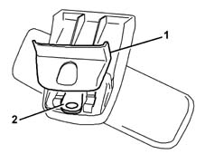

5010D36 DEMISTING SENSOR - R.R. following electrical equipment check
- Path
- Procedures > 50 AUXILIARY UNITS > 5010 CLIMATE CONTROL - MISCELLANEOUS > 5010D air temperature recording system > 5010D36 DEMISTING SENSOR - R.R. following electrical equipment check
- Kind
- repair procedure (removal / refitting; the operation number is the code)
- Applies to
- all engines; all production periods
- Interactive page
- https://sloeber94.github.io/elrnDB-lYpsln/en/#/2429293
Applies to: all engines; all production periods
 Removing
Removing
 Refitting
Refitting5050B66 rain sensor electronic unit cover - r r
1. Release the cover from the mirror support.
2. Extract the sensor from its housing.

Applies to: all engines; all production periods
Refitting
RemovingCheck that the sensor is not damaged.
Avoid touching the sensitive surface of the sensor.
Clean the windscreen thoroughly in the area of the sensor. Use a degreasing product.
Position the sensor and close the cover.